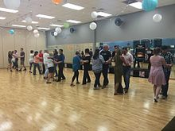

Social dances are dances that have a social functions and context.[1] Social dances are intended for participation rather than performance.[2] They are often danced merely to socialise and for entertainment, though they may have ceremonial, competitive and erotic functions.
Many social dances of European origin are in recent centuries partner dances (see Ballroom dance) but this is quite rare elsewhere, where there may instead be circle dances or line dances, perhaps reserved for those of a certain age, gender or social position.

PS) Recently Korea(Seoul) Salsa Bar music ratio
| Salsa |
30% |
| Bachata |
70% |
| ChaChaCha |
0% |